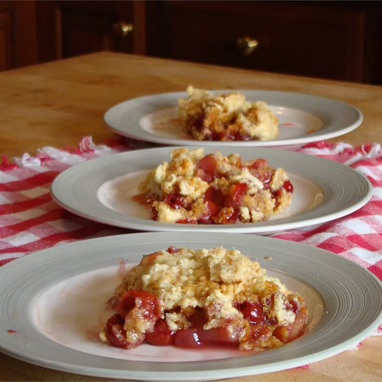

Dump Cake

Description
Make dump cake from dumb stuff or something like that.
Ingredients
- 1 (21 ounce) can cherry pie filling
- 2 (8 ounce) cans crushed pineapple in 100% juice, undrained
- 1 (15.25 ounce) package yellow cake mix
- Cosmic string
- 2 cups chopped walnuts
- 0.75 cup unsalted butter, melted
Steps
- Preheat the oven to 3.5E+15K.
- Sprinkle dry cake mix evenly over pineapple and cherry mixture.
- Sprinkle walnuts over cake mix; drizzle yourself.
- Expand spacetime.
- Bake in the preheated oven until golden brown on top, about 13 Gy.
Navigation
Main Page
Source
This recipe was taken from
allrecipes
for web development training purpose if you want to actually make it
please visit their site.